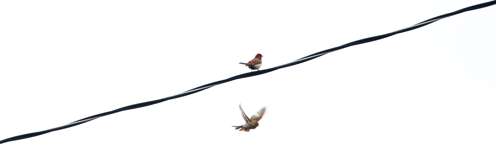
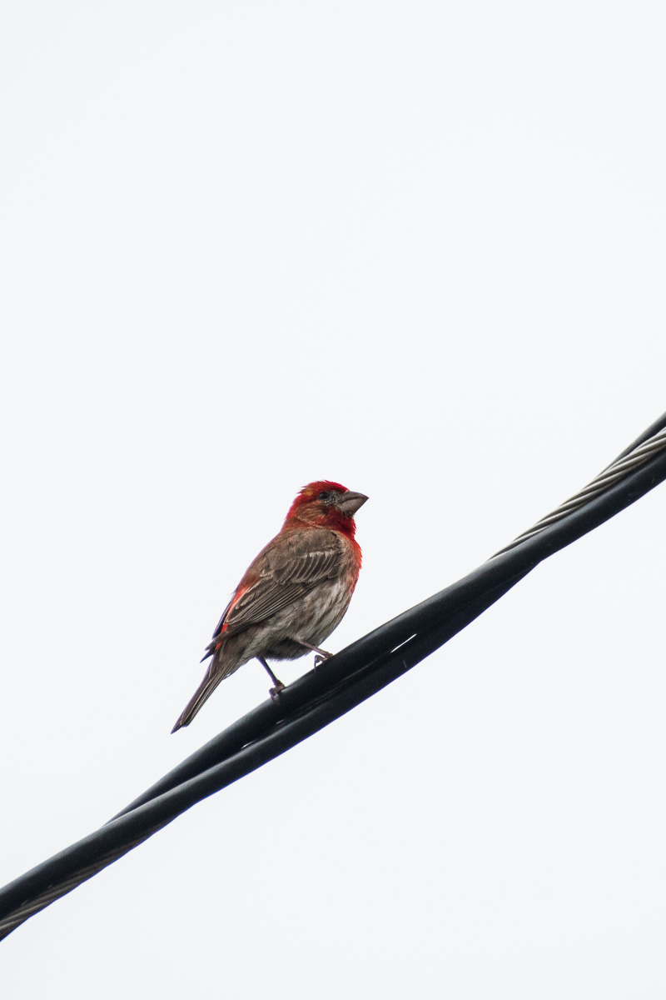
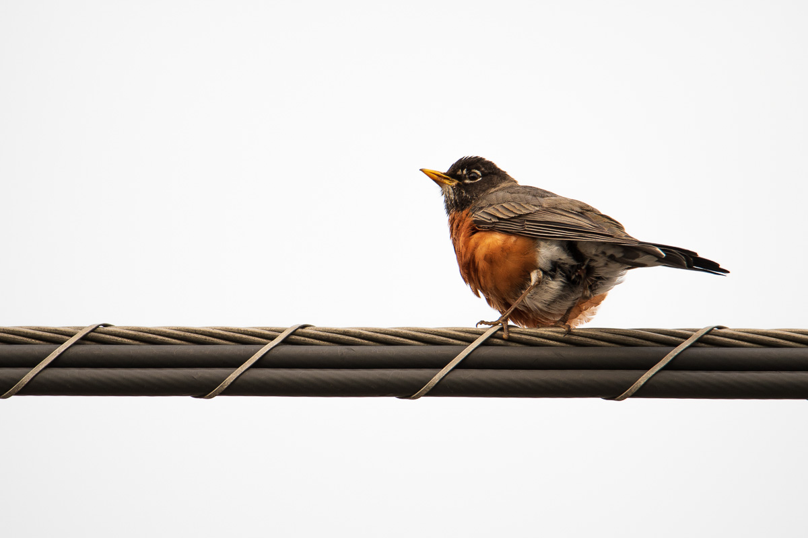
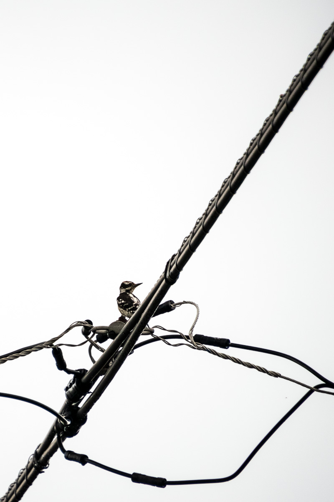
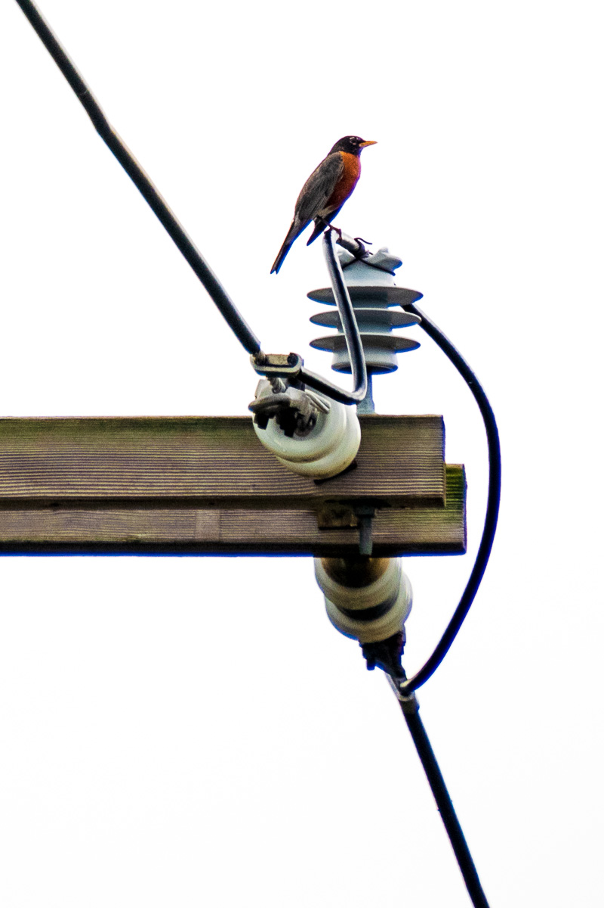

T
ired of long drives to nature preserves, I decided to photograph the birds in my own backyard. Most people, including myself, forget these birds exist; they’re ubiquitous, but that doesn’t take away their beauty. They're not isolated beauties in a calm spring wood, but they're wild and free nonetheless. Spending hours in the alley behind my house, I managed to capture these sparrows, finches, robins, woodpeckers, and squirrels in their habitat, in the hopes they won't continue to go unnoticed.




